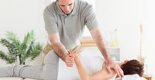
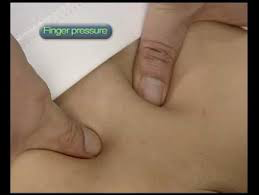
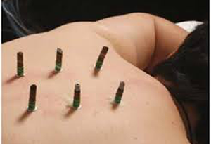
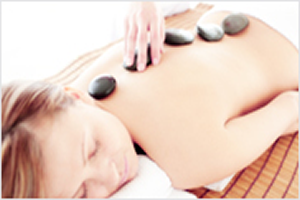
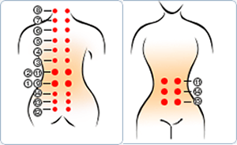
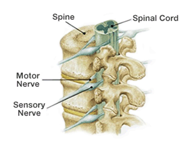

|
CHIROPRACTIC  Chiropractic corrects the deformed spinal regions by hands or through using equipments. If spine is deformed or crooked,the spinal nerves get squeezed and this condition causes various kinds of dysfunction of organs that are connected to the spinal nerves. By correcting the deformed or crooked spine, the nervous system is corrected, enhancing the organs, accelerating the lymph circulation and strengthening the immune system, the diseases are prevented and aging process is slowed down. FINGER PRESSURE  Since the early times, men instinctively touched, rubbed or pressed around area of pain. And during such repetitive process, men found areas where physical stimulation relieved or effective in healing particular sickness. Finger-pressure therapy is fundamentally based on the acupuncture points defined in the eastern medicine, but it also does add the western massage and chiropractic concepts. MOXIBUSTION  Moxibustion is a form of thermotherapy that started from mildly burning the areas ofpain. It involves dding various kinds of medicinal herbs to the treatment. This method developed as a method of stimulation that provides acupunctural treatments, that is as effective as pharmaceutical treatments.
THERMO THERAPY  Thermotherapy helps to improve blood circulation, stimulates the metabolism, and reduces pain, muscle tension, so it is known to help to improve the conditions of,arthritis,muscle pain and other chronic inflammation and also it helps to recover from fatigue. The main reason for applying heat to the body is to increase bloodstream by increasing the body temperature.
HEALING POINTS  CERAGEM using 15 healing point in our Spine & Stomac to keep strighten our Spine, and warm. CERAGEM products will do Warm Massage with FAR-INFRA RED to keep Healthy Body for Healthy Life. CERAGEM Thermal Massager products are designed to massage this 15 points in optimal 40min. Healthy Spine is the Basic for our Healthy Life  Spine is the pillar of our body . The 31 pairs of spinal nerves stemming out from the spinal cord branches out through the vertebras and get connected to the body organs,muscles, blood vessels, ligaments and skin tissues. The spinal cord and the spinal nerves control all our senses, movements, posture, body temperature, heart rate, respiration, blood sugar level and all other bodily functions |